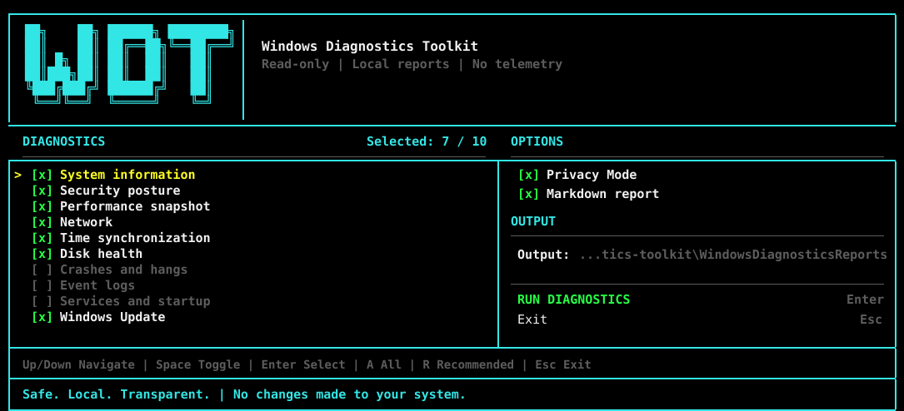
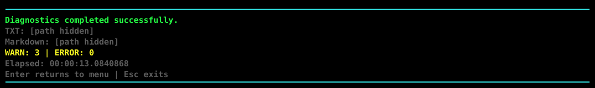

1. Select checks
Use the keyboard to toggle ten diagnostic areas, Privacy Mode, Markdown export, and the output directory.
↑↓ navigate Space toggle Enter select
Select the checks you need, generate local TXT and Markdown reports, and review an aggregated findings summary without changing Windows settings or uploading data.

Running the entry point without switches opens the interactive interface. The current selection survives resize events, and the renderer adapts from a full two-column dashboard to compact viewport modes.
Use the keyboard to toggle ten diagnostic areas, Privacy Mode, Markdown export, and the output directory.
↑↓ navigate Space toggle Enter select
The toolkit launches only reviewed diagnostic operations and keeps reports on the local machine.
A all R recommended Esc exit
The completion screen shows elapsed time and the number of WARN and ERROR findings before you open the report.

Clone the repository and run the entry point without switches. Windows PowerShell 5.1 and PowerShell 7 are both supported.
git clone https://github.com/0x0bug/windows-diagnostics-toolkit.git
cd windows-diagnostics-toolkit
.\Invoke-WindowsDiagnostics.ps1The report starts with an aggregated findings summary and keeps detailed diagnostic context below it. Run every module or select only the area relevant to the problem.
Windows build, CPU, memory, GPU, uptime, pagefile, CPU snapshot and top processes.
Diagnose high memory usageMicrosoft Defender, Windows Firewall, Secure Boot, TPM and BitLocker status.
Check disabled firewall profilesAdapters, DHCP, DNS, gateways, routes, proxy settings and basic reachability checks.
Inspect routes and proxy settingsApplication failures, hangs, BugCheck events, dump metadata and recent critical errors.
Find repeated application crashesPhysical disk health, volume size and configurable low-free-space warnings.
Check disk health and spaceW32Time status, configured source, reboot indicators, recent updates and update services.
Check pending reboot indicatorsEach guide explains which read-only module to run, what evidence it collects, how to interpret the report and what the toolkit intentionally does not change.
Create one redacted TXT and Markdown report for a support request.
Open the support report guideLocate recent Application Error, WER, hang, BugCheck and dump metadata.
Open the crash guideCompare available memory, pagefile use and top processes without continuous monitoring.
Open the memory guideInspect recent updates, reboot indicators and update-service state.
Open the update guideInspect W32Time state, timezone, source, verbose status and optional events.
Open the time guideCompare route metrics, adapters, gateways, DNS, DHCP and proxy context.
Open the network guideNo. The production scripts collect and report state without applying automatic fixes, changing services, editing the registry or reconfiguring the network.
Automatic mode uses Unicode only for interactive UTF-8 output. OEM encodings such as cp866, redirected output and unsupported hosts receive the printable ASCII fallback.
No. Resize events redraw the current interface and preserve the current selection. A running diagnostic operation is not restarted by the layout renderer.
Reports are written to the selected output directory. Nothing is uploaded automatically.
No. WARN describes observed state that deserves review. A module execution failure is reported separately with a non-zero exit code.
Enable Privacy Mode and Markdown export in the TUI, or use -All -PrivacyMode -ExportMarkdown, then inspect the final file.
Use the complete toolkit, select only the modules relevant to a support case, or run individual scripts.